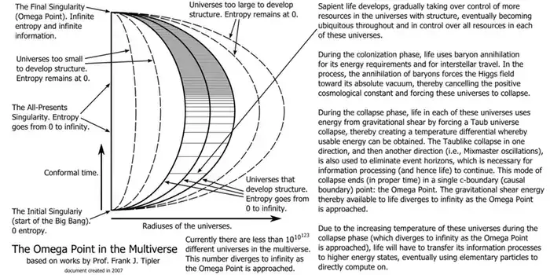

Two very different claims
Teilhard's Omega Point, developed in the 1920s and published in The Phenomenon of Man (1955), is a theological vision: evolution tends toward increasing complexity and consciousness, converging on a final unity that is also a person. It is not a physical theory and does not pretend to be testable.
Maps, diagrams and images


Frank Tipler's 1994 The Physics of Immortality is a physical argument. In a closed, collapsing universe, intelligent life could in principle harvest the available free energy and compute at ever higher rates as the final singularity approaches, achieving in the last moments an infinite amount of subjective time and information.
The two are often conflated because they share a name and a shape. They share nothing else: one is metaphysics, the other is a conditional claim about general relativity and thermodynamics.
Why the physical version fails
The scenario requires a closed universe that recollapses. In 1998 the discovery of accelerating expansion, confirmed repeatedly since, pointed to a universe that will not recollapse — removing the final singularity the argument needs.
Even in a collapsing universe, the calculation is fragile. Anisotropy and inhomogeneity grow during contraction, and BKL-type chaos tends to make the approach to the singularity irregular in a way that destroys the ordered computation the scenario requires. Later work found narrower conditions under which some version survives, but they are special cases, not the generic case.
There is also an information-theoretic objection: the total entropy bound means the available free energy in a collapsing universe is finite, and whether infinite subjective time can be extracted depends on the details of the collapse in ways nobody can test.
Teilhard's version is a work of religious philosophy that has been influential in popular science writing and has no empirical content. It is included because it is the origin of the idea, not because it is a hypothesis.
Tipler's version was a legitimate, falsifiable physical proposal. It made a prediction — a closed universe — and the prediction failed. That is how the process is supposed to work.
The general pattern is worth noting: teleological arguments about the endpoint of the universe tend to acquire their conclusions from their premises, and to lose those premises when the cosmology changes.
The archive labels this fringe because the theological form is unfalsifiable and the physical form has been overtaken by observation — the label is a statement about the evidence, not about the sincerity of the authors.
Why it is in the archive
Because it closes the 200, and because it is a clean example of an idea that was scientifically respectable and then stopped being so when the data arrived.
Related: Dyson swarms, the Boltzmann brain, Kardashev bottlenecks.
Sources for this page
- Wikipedia, “Omega Point” — Teilhard’s and Tipler’s versionsen.wikipedia.org
- Wikipedia, “Accelerating expansion of the universe” — the observation that ended the scenarioen.wikipedia.org
- Wikipedia, “BKL singularity” — why collapse is chaotic rather than orderlyen.wikipedia.org
- Wikipedia, “Frank J. Tipler” — the argument and its receptionen.wikipedia.org
Open resources on this topic
- BookFrom the Gaia Goddess to the Omega Point: theories of Information Integrity — Abdolhossein Farjpahlou, Faride Osareh, Ali Hamidi · 2012 (Internet Archive, free to read)
- BookThe Omega Point — Mark Mozden · 2009 (Internet Archive, free to read)
- BookThe Omega Point : the search for the missing mass and the ultimate fate of the universe — Gribbin, John R · 1988 (Internet Archive, free to read)
- PapersOpen-access articles: DOAJ · PubMed Central · Internet Archive Scholar
- BooksPublic-domain and borrowable copies: Open Library · Project Gutenberg · Google Books
More images
Cite this page
Momin, S. (2026). The Omega Point. The Larger World Archive. https://drsamonline.github.io/LARGE_GLOBE/omega-point.htmlMomin, Sohil. “The Omega Point.” The Larger World Archive, 2026, https://drsamonline.github.io/LARGE_GLOBE/omega-point.html.Momin, Sohil. “The Omega Point.” The Larger World Archive, 2026. https://drsamonline.github.io/LARGE_GLOBE/omega-point.html.@misc{the2026omega,
author = {Momin, Sohil},
title = {The Omega Point},
year = {2026},
howpublished = {The Larger World Archive},
url = {https://drsamonline.github.io/LARGE_GLOBE/omega-point.html},
note = {Last reviewed 20 November 2026}
}Last reviewed 20 November 2026 · Corrections policy · this page is not peer reviewed